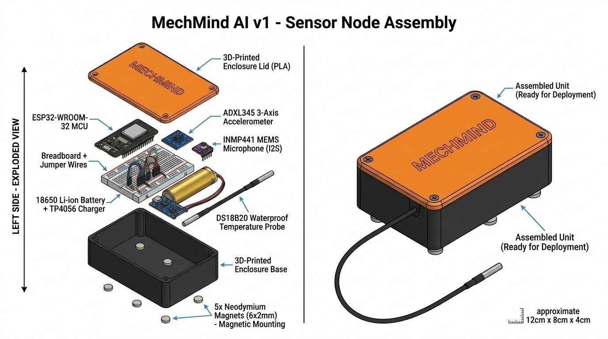

One integrated system. Sensors, AI engine, and WhatsApp — working together. MechMind monitors your heavy equipment in real time and gives mechanics expert-level fault diagnosis. No app to download. Just WhatsApp.
Three sensors. One AI engine. WhatsApp delivery. MechMind is not a chatbot — it is a complete diagnostic system. Hardware monitors the machine. The AI reads technical manuals. The mechanic gets answers where they already are — on WhatsApp.
DS18B20 sensor tracks engine bay and hydraulic fluid temperature. Overheating is the number one cause of equipment failure on construction sites.
ADXL345 accelerometer measures vibration in three axes. Abnormal patterns reveal bearing damage, pump failure, and structural issues before they become catastrophic.
INMP441 MEMS microphone captures acoustic signatures at 16kHz. Unusual noise patterns indicate cavitation, leaks, and mechanical cracks.
Llama 3.1 (8B) runs locally — no data leaves the site. The AI searches indexed technical manuals and gives diagnoses grounded entirely in documentation.
No app to install. No login. Mechanics send fault descriptions on WhatsApp and receive structured diagnoses with probable causes and prevention steps.
Real-time monitoring shows sensor readings, alert history, and equipment health across all connected machines. Built with Chart.js for smooth visualization.
Three components working together — sensor hardware on the machine, an AI engine that reads your manuals, and WhatsApp as the delivery layer.
No app. No login. A mechanic describes the fault on WhatsApp — in their own words. MechMind identifies the query type, searches indexed technical documentation, cross-references live sensor data, and returns a structured diagnosis grounded entirely in the manuals.
Every two seconds, the ESP32 sensor unit reads temperature, vibration, and sound — and pushes the data to the backend over WiFi. When a reading crosses a threshold, the system triggers an alert immediately.
Monitor all connected equipment from one screen. Real-time readings, alert history, AI diagnostics — all in one place.
Designed for the way mechanics actually work — not how engineers wish they would.
No app download. No training. Every mechanic already has WhatsApp. That's the interface.
Llama 3.1 runs entirely on your hardware. Zero data sent to external APIs. Your diagnostic data stays on-site.
If MechMind doesn't have the answer in its indexed manuals, it says "I don't know." No guesses. Safety first.
Threshold-based alerting triggers instantly when readings cross safe limits. Get notified before the breakdown.
6 indexed technical manuals — J1939 fault codes, hydraulic troubleshooting, diesel powertrain, safety procedures.
Full codebase on GitHub. Firmware, backend, dashboard, WhatsApp bot — everything is transparent and auditable.
Each machine gets one unit — physically attached. Three sensors, one microcontroller, WiFi connectivity. Reads and transmits every 2 seconds.

56 test questions — ranging from specific fault codes to tricky edge cases — every answer checked by hand. The remaining 25% are honest refusals, not confident wrong answers. Safety by design.
Send a fault description on WhatsApp right now. Or explore the full codebase on GitHub. MechMind is live and ready.